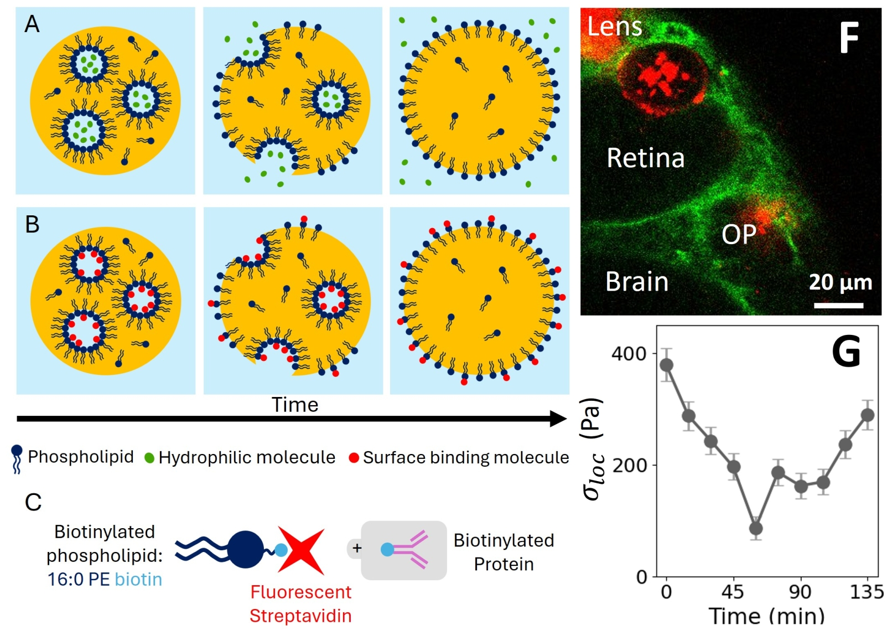
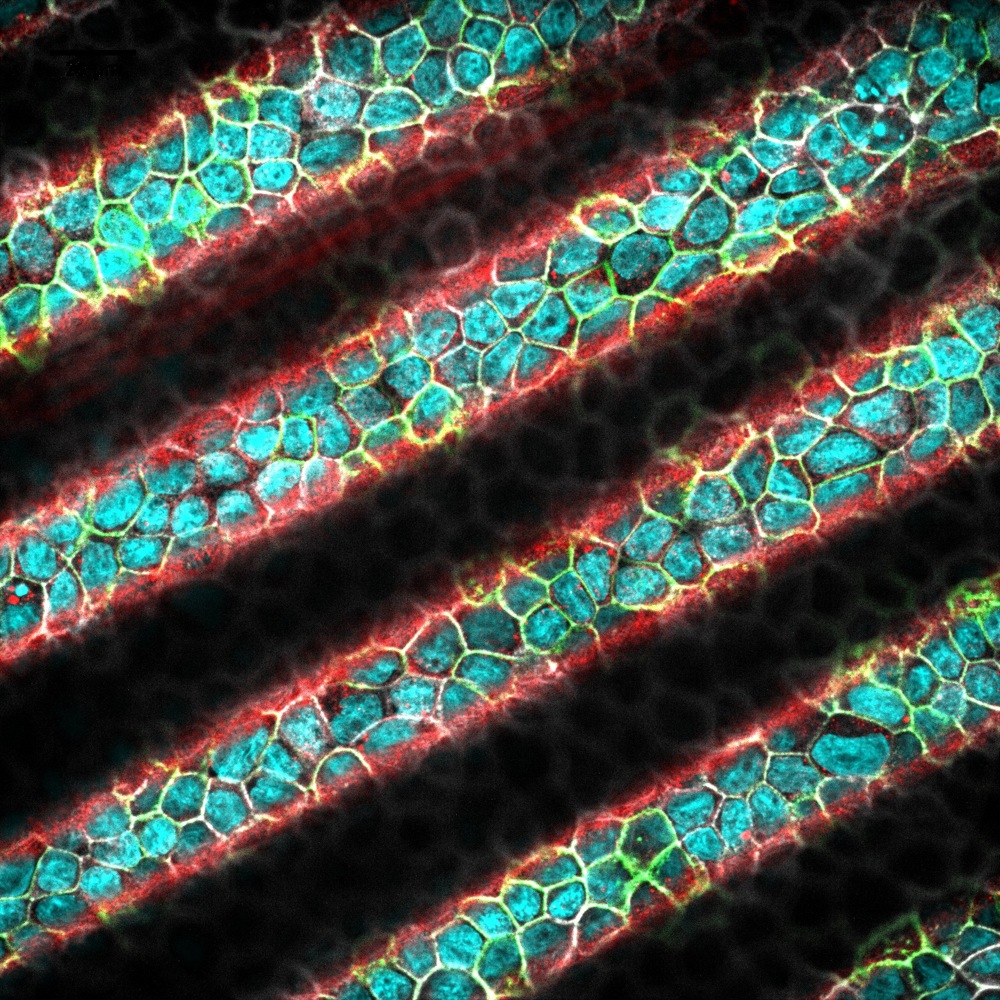

Recherche Research
Comment l'hétérogénéité cellulaire et la mécanique tissulaire s'influencent-elles mutuellement ?
Les tissus biologiques sont des matériaux actifs et hétérogènes. Que ce soit au cours de l'embryogenèse ou de la progression tumorale, la manière dont les propriétés mécaniques (déformations, écoulements) et les hétérogénéités cellulaires (adhésion, contractilité) rétroagissent reste largement incomprise. Mes recherches visent à sonder ces rétroactions en développant des cadres expérimentaux robustes, à l'interface entre la physique de la matière molle et la biologie du développement.
How do cellular heterogeneity and tissue mechanics mutually influence each other?
Biological tissues are active and heterogeneous materials. Whether during embryogenesis or tumor progression, the way mechanical properties (deformations, flows) and cellular heterogeneities (adhesion, contractility) feedback on each other remains largely misunderstood. My research aims to probe these feedbacks by developing robust experimental frameworks at the interface between soft matter physics and developmental biology.

Microrhéométrie & Forces tissulaires Microrheometry & Tissue Forces
Mesurer la rhéologie in situ de la matrice extracellulaire en cours de développement via des inclusions ferrofluides actives.
Probing in situ rheology of the extracellular matrix during development using active ferrofluid inclusions.

Mécanique des tissus épithéliaux Epithelial Tissue Mechanics
Explorer comment la courbure physique des substrats dicte la forme 3D et les tensions de surface des monocouches cellulaires.
Exploring how physical curvature of substrates dictates the 3D shape and surface tensions of cell monolayers.